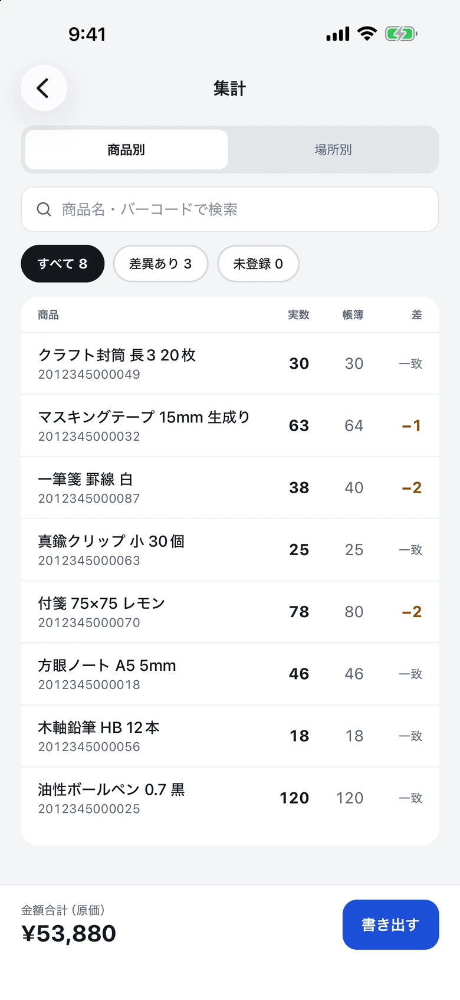
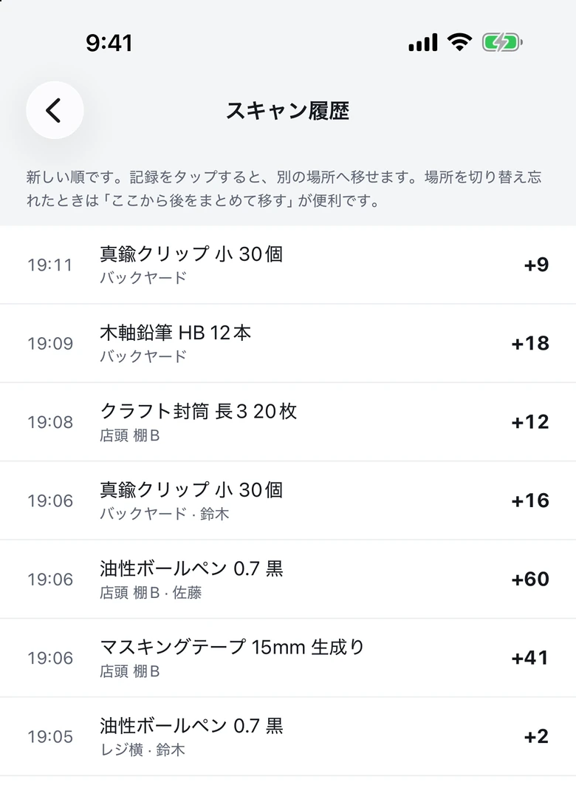
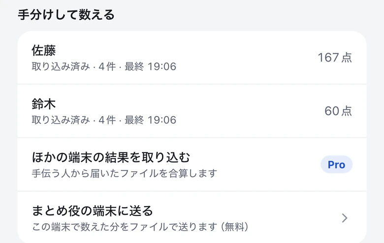
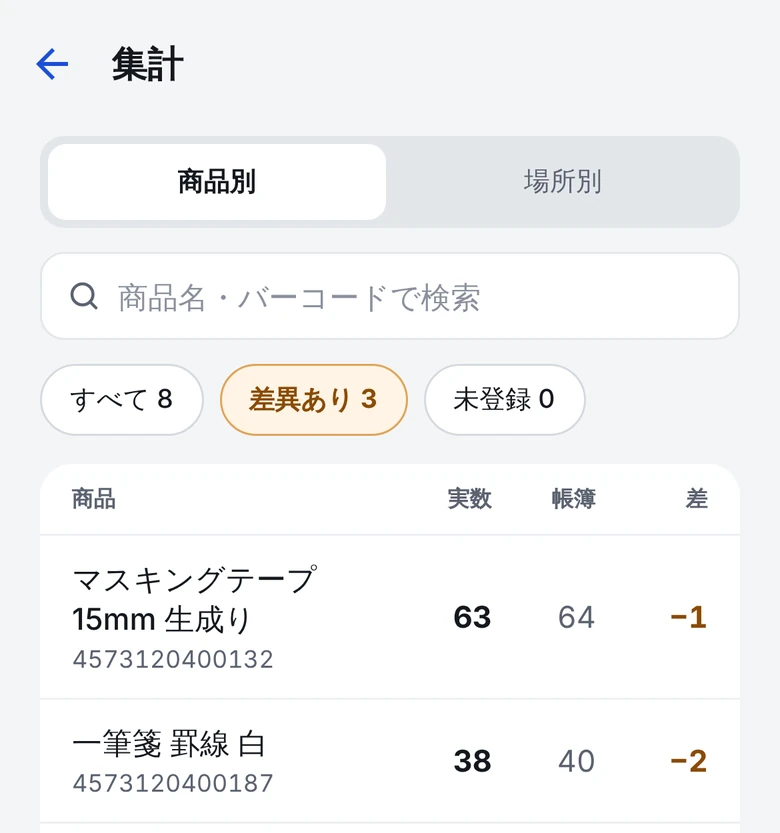
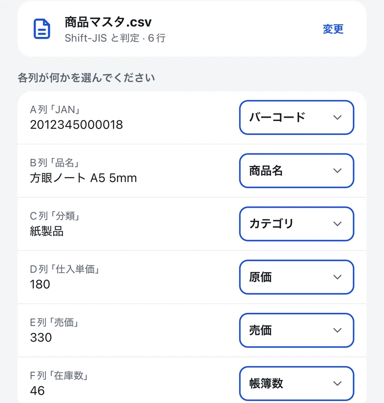
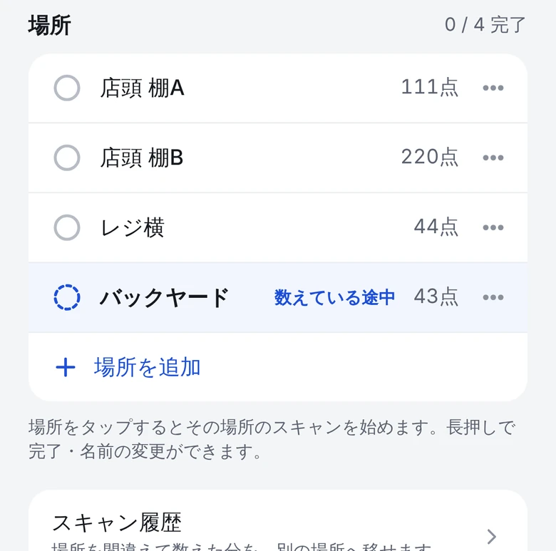
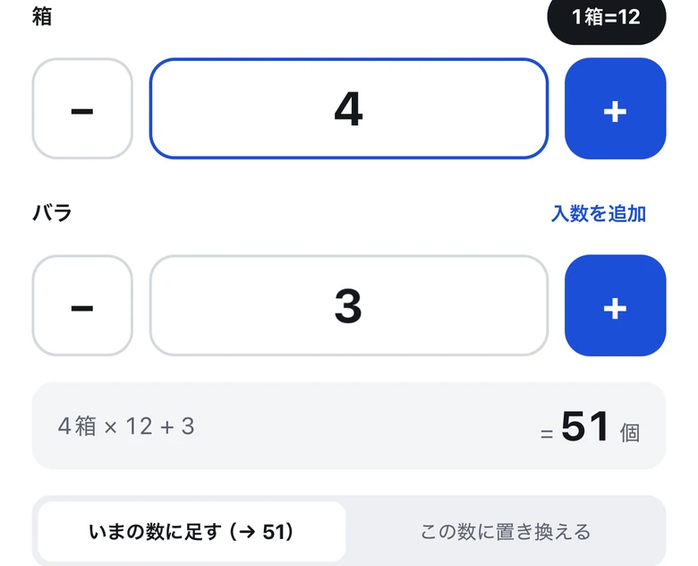
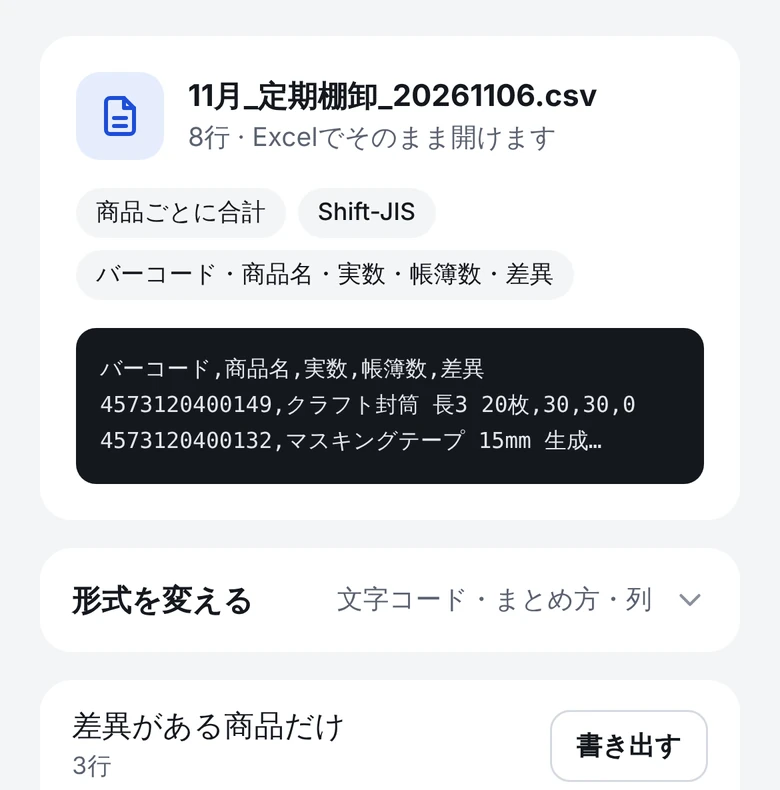

数え終わったら、
集計も終わっている。
Tanapi は、
紙の
| 店長 | まとめ役・Pro版 | 191点 |
|---|---|---|
| 佐藤 | 無料版 | 167点 |
| 鈴木 | 無料版 | 60点 |
| 合計 | 418点 |
iPhone・AndroidApp Store・Google Play で

数える、送る、まとめる。
サーバーも
それぞれのスマホで数える
手伝う人は Tanapi を

終わったら、まとめ役に送る
「まとめ役の端末に送る」を

1台にまとめて、差を見る
まとめ役の

棚卸の日に要ることだけ。
今の
商品の一覧は Excel から
今ある CSV を

場所ごとに数える
棚や

箱のまま数える
「1箱 = 12個」を

Excel で開ける CSV に
Shift-JIS で

- 圏外でも動く通信せず、端末の中だけに保存します。
- 途中で閉じても大丈夫読み取るたびに、すぐ保存します。
- 場所の付け替え切り替え忘れた分も、あとからまとめて移せます。
無料で始められます。月額料金は、ずっとかかりません。
Pro版（¥4,800・買い切り）が
| 機能 | 無料版1人で使う・ |
Pro版手分けした |
|---|---|---|
| バーコードで | 使える | 使える |
| まとめ役の端末に送る | 使える | 使える |
| ほかの端末の | — | 使える |
| 商品マスタ | 100件まで | 無制限 |
| 保存できる棚卸 | 1件 | 無制限 |
| 料金 | ¥0 | ¥4,800買い切り |
同じ Apple ID・Google アカウントの
よくある質問
手伝う人も Pro版を買う必要がありますか？
いりません。
手伝う人のスマホにも商品の一覧が必要ですか？
なくても
同じ人が2回送ったら、二重に数えられませんか？
数えられません。
バーコードが付いていない商品は？
コードを
データはどこに保存されますか？
それぞれの
1人で使うこともできますか？
できます。